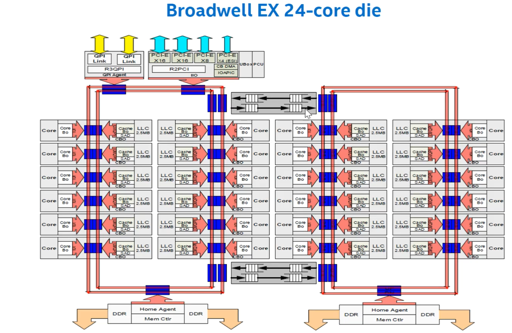
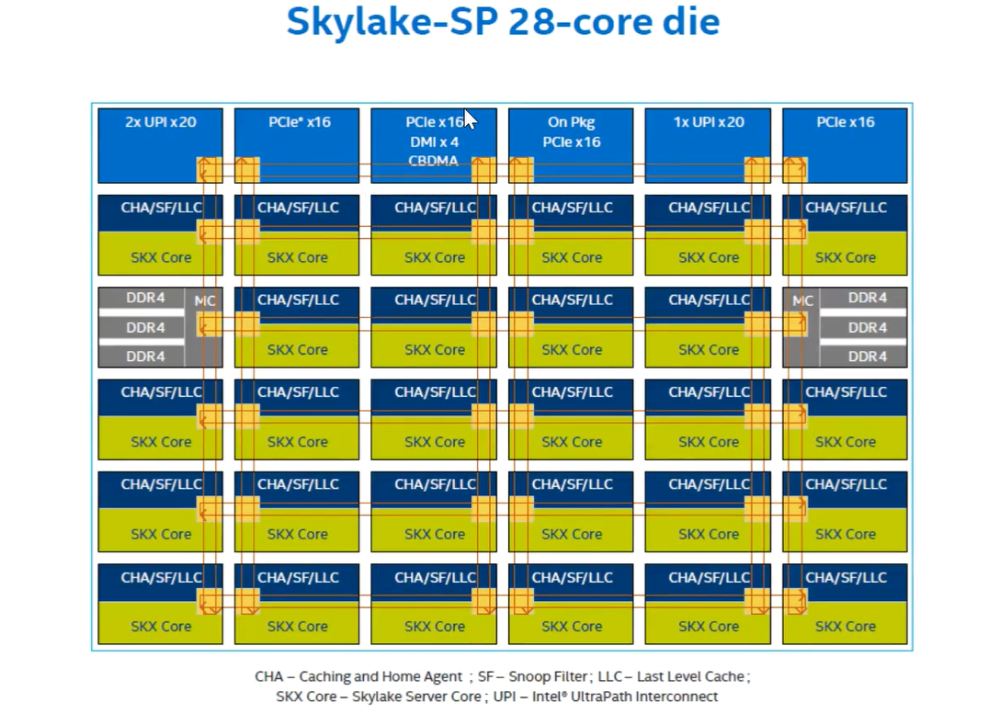

NoC
[toc]
在服务器 CPU 中，多核片上互连（On-Chip Interconnect）方案是多核处理器架构的关键组成部分，负责在各个核心、缓存和其他组件之间传递数据和指令。
片上多核互连方案
以下是几种主要的多核片上互连方案：
-
共享总线（Shared Bus） a.特点：所有核心通过一个共享的总线进行通信。 b.优点：实现简单，适用于小规模多核系统。 c.缺点：当核心数量增加时，带宽和性能迅速下降，容易成为瓶颈。
-
交叉开关（Crossbar Switch） a.特点：每个核心都有一个专用通道连接到每个其他核心或存储器单元。 b.优点：提供高带宽和低延迟。 c.缺点：硬件复杂度和成本随着核心数量增加而急剧上升，不适用于大规模多核系统。
-
环形互连（Ring Interconnect） a.特点：核心通过一个环形网络进行连接，每个核心连接到环上的两个相邻节点。 b.优点：结构简单，适用于中等规模的多核系统。 c.缺点：随着核心数量增加，延迟增大，可能出现带宽瓶颈。
-
网格（Mesh）和龙格（Torus）互连（Mesh and Torus Interconnects） a.特点：核心按二维或三维结构排列，彼此通过网格状或环状拓扑连接。 b.优点：可扩展性好，适用于大规模多核系统。 c.缺点：实现复杂，可能需要更多的路由和控制逻辑。
-
网络芯片（Network-on-Chip, NoC） a.特点：借鉴传统网络技术，通过路由器和链路构建复杂的网络拓扑。 b.优点：高度可扩展，适用于大规模多核系统，支持高带宽和低延迟通信。 c.缺点：设计和实现复杂，需要有效的路由和流量管理策略。
图1. 几种典型的片上互连方案
以下是一些具体产品案例，Intel Broadwell 处理器使用了两个ring的结构来连接所有的core，两个core之间使用了FIFO的结构来进一步互连。

随着核心数目的进一步增多，Intel在Skylake处理器上使用了Mesh结构。

参考文献：
- 片上互连网络——多核众核处理器关键技术
- Efficient Barrier Implementation on the POWER8 Processor
- 计算机体系结构基础